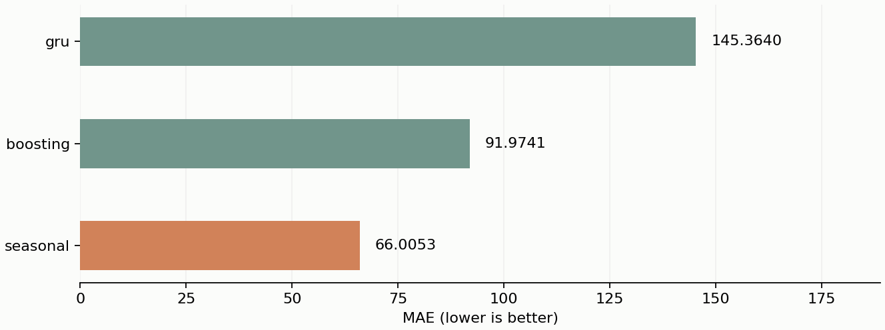

168 godzin historii i znany kalendarz. Podział czasowy 70/15/15; horyzont 24 h. Przyszła pogoda wykluczona. / 168 historical hours and known calendar. Chronological 70/15/15 split; 24-hour horizon; no future weather.

| Split | Model | Metric | Value |
|---|---|---|---|
| validation | seasonal | MAE | 57.80008 |
| validation | seasonal | RMSE | 98.10732 |
| validation | seasonal | WAPE | 0.20572 |
| validation | boosting | MAE | 72.74492 |
| validation | boosting | RMSE | 119.64583 |
| validation | boosting | WAPE | 0.25891 |
| validation | gru | MAE | 126.37606 |
| validation | gru | RMSE | 192.74706 |
| validation | gru | WAPE | 0.44980 |
| test | seasonal | MAE | 66.00531 |
| test | seasonal | RMSE | 113.94454 |
| test | seasonal | WAPE | 0.27423 |
| test | boosting | MAE | 91.97410 |
| test | boosting | RMSE | 150.21882 |
| test | boosting | WAPE | 0.38212 |
| test | gru | MAE | 145.36395 |
| test | gru | RMSE | 225.77133 |
| test | gru | WAPE | 0.60394 |
Baseline sezonowy wygrał na walidacji. GRU była trenowana, ale uzyskała gorsze wyniki. Dane historyczne jednego miasta nie potwierdzają uogólnienia. / Seasonal baseline won validation. The trained GRU performed worse. One historical city does not establish generalization.
UCI Bike Sharing, CC BY 4.0Reproduce: evaluate.ps1